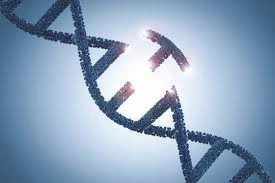

The insulin used for the
treatment of diabetes is
produced mainly from
bacteria.
How can the insulin
produced by bacterium
be used by humans?
Did you notice Saju’s doubt when he heard the doctor’s talk in
the seminar conducted by the Health Club?
How can bacteria produce insulin that can be used by humans?
Note down your assumption.
Observe illustration 7.1 on the various stages in the production
of bacteria that are capable of producing insulin. Based on the
indicators, analyse the illustration, validate your assumption and
write down the inferences in the Science diary.
Human cell
Human DNA
Bacteria
DNA of the
bacterium
Circular DNA of
the bacterium
(Plasmid)
Cutting of insulin
gene
Isolation of
plasmid
Joining insulin gene
with plasmid
Plasmid with ligated
insulin gene is inserted in
to bacterial cell
Bacteria that multiply
in the culture medium
produce inactive insulin
Active insulin is
produced from this
Illustration 7.1 Production of insulin through genetic engineering
114
Page 43
Figure fig_ch06_p043_01 (Page 43)

Figure fig_ch06_p043_02 (Page 43)
Biology - X
Indicators
•
Change brought about in the genetic constitution of bacteria.
•
New trait formed in this bacterium.
•
Ability of production of insulin by succeeding generations of
this bacterium.
Genetic engineering
Science has progressed in such a way that it can produce organisms
with desirable qualities, by bringing about changes in the genetic
material. The use of microorganisms and biological processes for
various human requisites is called Biotechnology.
From BC 4000 onwards organisms like yeast, a kind of fungus, were
used to prepare food items like bread. The ability of fungi and bacteria
to convert sugar into alcohol was utilised to make wine, appam and
cake. These can be considered as traditional methods of biotechnology.
Genetic engineering is the modern form of biotechnology.
Today, we can produce things essential for humans by bringing
about changes in the genetic material of organisms. You have
already been familiarised with this idea when you analysed the
method of production of insulin. Genetic engineering is the
technology of controlling traits of organisms by bringing about
desirable changes in the genetic constitution of organisms. The basis
of this is the discovery of the fact that genes can be cut and joined.
How are the very minute genes cut and joined?
Analyse the description given below on the basis of the indicators
and prepare notes.
Enzymes are used to cut and join genes.
The enzyme restriction endonuclease is
used to cut genes. This enzyme is known
as ‘genetic scissors’. The enzyme ligase is
used for joining. This enzyme is called
‘genetic glue’.
Biology - X
How was the insulin producing gene of humans transferred into
bacteria? A gene from one cell is transferred to another cell by
using suitable vectors. Vectors which contain ligated genes enter
target cells. Plasmids in bacteria are generally used as vectors. In
this way, the new genes become a part of the genetic constitution
of target cells.
Indicators
•
Cutting of gene
•
Ligation (insertion) of gene
•
Vectors
The progress in genetic engineering has influenced various sectors
of life.
Identify this by observing illustration 7.2 indicating some of the
scope of genetic engineering.
Gene therapy
Genetically modified animals and crops
t^md≥knIv ]cntim[\
Forensic test
Illustration 7.2 Scope of genetic engineering
Gene therapy
Genetic engineering has made a great leap in the treatment of
genetic diseases. Gene therapy is a method of treatment in which
the genes that are responsible for diseases are removed and normal
functional genes are inserted in their place. This has triggered
great hope in the control of genetic diseases.
Biology - X
How can the genes
that are responsible for diseases be
identified from among thousands
of microscopic genes?
What is your response to Thara’s doubt?
Analyse the description given below on the
basis of indicators. Write down your
inferences in the Science diary.
Human Genome Project
Eventhough science has progressed a lot,
we couldn’t control genetic diseases. The
reason for this is that we could not identify
the exact gene responsible for a specific
trait and its location. In 1990, the Human
Genome Project was started as an
attempt to solve this issue. As a result of
experiments conducted in various
laboratories around the world till
Figure 7.1
The logo of Human Genome 2003, the secrets of human genome
Project
were revealed. The technology known as
gene mapping helped to identify the location of a gene in the DNA
responsible for a particular trait. The complete genetic material present
in an organism is called its genome. In human DNA, majority of genes,
except the genes that code for protein are non-functional. They are called
junk genes.
Biology - X
Did you understand the relevance of the Human Genome Project?
Prepare a wall magazine using the information given below and
collecting more data. Exhibit the magazine in the classroom.
Human genome has about 24000 functional genes.
Major share of human DNA includes junk genes.
There is only 0.2 percent difference in DNA among humans.
About 200 genes in human genome are identical to those in bacteria.
Genetically modified animals and crops
Many proteins that can be used for the treatment of diseases in
humans are produced through genetic engineering.
Examine table 7.1 given below and prepare notes on these
proteins.
Protein required for treatment
Disease/Symptom
Interferons
Viral diseases
Insulin
Diabetes
Endorphin
Pain
Somatotropin
Growth disorders
Table 7.1
Genetic engineering has progressed a lot more from biotechnology.
Today, genetic modification in organisms can be implemented
more effectively. This is made possible through the insertion of
gene that code for desirable characters into the genetic constitution
of an organism.
Biology - X
One of the future promises
of genetic engineering is
pharm animals.
Genes responsible for the
production of insulin and
growth hormones required
for humans are inserted
into animals like cow, pig
etc, transforming them into
pharm animals.
There are certain
limitations in producing
insulin using bacteria. The
most important hurdle in
this field is the culturing of
bacteria. Researches in this
field show that instead of
this, medicines can be
extracted from the blood or
milk of genetically modified
animals.
Editing of genetic constitution
Today, genetic engineering can edit the genes
in the genetic constitution of organisms just
as editing an essay. This most modern aspect
of genetic engineering is called gene editing.
CRISPR - Cas 9 is the most effective genetic
scissors used for this. This contains 'Cas 9', an
enzyme and a guide RNA (gRNA). Active
researches on gene editing are being conducted
worldwide. Recently, China released the news
on the birth of twins whose genes were edited.
It is declared that these children have acquired
resistance to HIV through gene editing. This
technology has created an avenue to the
endless scope of gene therapy. But it has also
Genetic modification is
initiated many criticisms. Worldwide protests
implemented not only in
are going on against researches which do not
animals but in plants also.
consider the possibilities of exploitations,
Today, insect resistant
dangerous effects and deterioration of values
plants like Bt brinjal,
due to these experiments.
soyabean, cotton, maize etc
are common. When genetic
modification is carried out
in organisms, it should be
ensured that there are no
harmful consequences to
humans or nature. Prepare a Science edition on the
new inventions in this field by collecting more
information.
Lost child found after years :
Identified through DNA testing
Did you notice the headline of the newspaper report?
How are persons identified through DNA testing?
Read the description given below. Discuss it on the basis of the
indicators and formulate inferences. Write them down in the
Science diary.
DNA Finger printing
The technology of testing the arrangement of nucleotides is DNA
profiling. Certain experiments conducted by a scientist named
Alec Jeffreys in 1984 paved the way for DNA testing. Just like
the difference in the fingerprint of each person, the arrangement
of nucleotides in each person also differs. This discovery became
the basis of DNA testing. Hence this technology is also called
DNA finger printing.
Alec Jeffreys
The arrangement of nucleotides among
close relatives has many similarities.
Hence, DNA finger printing is helpful
to find out hereditary characteristics,
to identify real parents in cases of
parental dispute and to identify persons
found after long periods of missing due
to natural calamities or wars. DNA of
the skin, hair, nail, blood and other
body fluids obtained from the place of
murder, robbery etc., is compared with the DNA of suspected
persons. Thus, the real culprit can be identified from among the
suspected persons through this method.
We have familiarized ourselves with the endless scope of genetic
engineering. Collect more information regarding the scope of
genetic engineering and exhibit in the Science corner. Through
active researches and new discoveries, this branch is advancing
day by day. But, like any other technology, genetic engineering
has also been misused. Observe the collage given below.
T hreat to indigenous varieties
It is criticized that genetically modified varieties cause
harm to indigenous varieties and may cause health issues
to humans.
Bi ow
e
Applica a p o n s - A
new
pathog tion of geneti
chall
enge
enemieens multiplied cally modifie
the exis s is called bio through bioted pathogens a
n
w
tence o
f huma ar. This becochnology upo d
n being
n
m
es a thr
s.
eat to
n
i f i c a t i os
d
o
m
c
t
Geneti tion of righ
a
l
o
i
that
- v
ons argue sion
ti
a
iz
n
a
g
r
Certain o dification is an intru gs
genetic mo eedom of living bein
upon the fr iolation of rights.
and it is a v
Is it right to misuse technologies that can pave the way to human
progress?
As such possibilities prevail, must we promote genetic
engineering?
Organize a debate in the class on this topic.
Science and technology are the products of
man's reasoning ability. We can justify this
only if they are utilized for human benefit.
We must use science and technology as
means to overcome the challenges faced by
human beings.